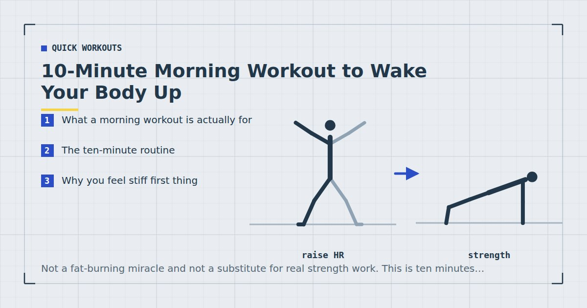

Quick Workouts & Plans
10-Minute Morning Workout to Wake Your Body Up
Not a fat-burning miracle and not a substitute for real strength work. This is ten minutes designed to get a stiff body moving properly before a day that will mostly be spent sitting.

Most morning workout articles promise something the morning cannot deliver: that ten minutes before work will transform your body. It will not. What it can reliably do is take a body that has been horizontal for eight hours and make it feel considerably better for the next eight.
That is a smaller claim, and it is the one worth making. If you want the session that actually builds strength, that is the 15-minute full-body workout or a structured plan like the 4-week beginner plan. This is the one you do on the days those are not happening.
What a morning workout is actually for
Three things, in order of how confident we can be about them:
- Getting joints and tissue moving. This is the most immediate and the most reliable. Spinal discs absorb fluid overnight and joints have not been loaded for hours; gentle movement addresses both.
- Banking activity you might not get later. A session done at 6:50am cannot be cancelled by a 6pm meeting. For consistency reasons alone, mornings win for a lot of people — something I go into in morning vs evening workouts.
- Feeling more awake. Widely reported, harder to isolate from the effects of standing up, drinking water and being exposed to daylight. Real, but do not over-attribute it to the exercise.
Ten minutes of bodyweight movement burns a small number of calories — roughly what is in a slice of toast. It is not a weight-loss strategy, and any article telling you otherwise is selling something. Its value is in how the rest of your day feels and in the habit it builds.
The ten-minute routine
Seven movements, roughly 80 seconds each, done at a pace where you could still hold a conversation. No jumping, so it works in a flat — see small-space training if noise is your main constraint.
-
Standing reach and roll — 60 seconds
Reach both arms overhead, then roll the shoulders back and down. Ten slow repetitions. This is the wake-up call for a thoracic spine that has been folded into a mattress.
-
Standing side bend — 60 seconds
Feet hip-width, one arm overhead, lean gently to the opposite side. Five each way, holding two seconds at the end range. You should feel this along the ribs, not in the lower back.
-
Bodyweight squat — 90 seconds
Twelve to fifteen slow repetitions to whatever depth is comfortable. First thing in the morning is not the time to chase depth — that comes back after a few minutes of moving.
-
Cat–cow — 60 seconds
On hands and knees, alternate arching and rounding the spine. Ten slow cycles, moving one vertebra at a time rather than swinging between the two ends.
-
Incline push-up — 90 seconds
Hands on a bed, chair or kitchen counter. Ten to twelve repetitions. Higher than you would use for a training session — the goal here is blood flow, not failure. The push-up progression guide has the full ladder if you want to build this into real work.
-
Glute bridge — 90 seconds
Fifteen repetitions with a one-second squeeze at the top. If you sit for a living, this is arguably the most useful ninety seconds in the routine.
-
Standing march — 60 seconds
March on the spot, knees to hip height, arms swinging. This is the bit that actually raises your heart rate and body temperature. Finish here rather than starting here.
The point of a morning routine is not that ten minutes is enough. It is that ten minutes cannot be cancelled by your afternoon.
Why you feel stiff first thing
Overnight, the intervertebral discs take on fluid, which is why you are measurably taller in the morning and why the spine feels less willing to bend. Joints have also gone hours without loading, and synovial fluid moves in response to movement rather than in anticipation of it.
The practical consequence is that early morning is a poor time for maximum-range stretching or heavy loaded spinal flexion, and a good time for gentle repeated movement through a comfortable range. That is why this routine is built from many easy repetitions rather than long held stretches.
Making it a real workout
If you want ten morning minutes to build strength rather than just prepare you for the day, three changes do most of the work:
- Lower the push-up surface. Counter to chair to floor, over weeks. This is the single biggest jump in difficulty available.
- Slow the lowering phase. A three-second descent on squats and push-ups makes them meaningfully harder with no equipment and no extra time.
- Take the last set close to failure. Evidence suggests that training close to failure matters more than the load used when the load is light, which is exactly the bodyweight situation.2
Do all three and this stops being a mobility routine and becomes a short strength session. At that point you should be treating it as training and giving yourself rest days, which the weekly schedule guide covers.
Fitting it into a real morning
The most common failure is not the workout. It is that ten minutes does not exist in a morning that was already tight.
Two things that reliably help. First, attach it to something you already do without deciding — the kettle going on, the shower warming up. Habit research on cue-based repetition supports this far better than it supports willpower or motivation, which is the argument in habit stacking for exercise. Second, lay out anything you need the night before, so the decision is already made when you are least capable of making it.
Three ways people get this wrong
1. Treating it as a workout that needs recovery
Done at conversational intensity, this routine does not need a rest day. If you have made it hard enough that it does, treat it as training and schedule it accordingly.
2. Stretching hard, cold, first thing
Long aggressive static stretching on a cold, fluid-loaded spine is the one genuinely risky thing you can do in a morning routine. Move through range instead of parking at the end of it.
3. Skipping it because ten minutes seems pointless
The alternative you are comparing it to is not a better workout. It is nothing. The World Health Organization frames adult activity as a weekly total rather than a per-session minimum, and short bouts count toward it.1
Should you eat or drink first?
For ten minutes at this intensity, food makes almost no difference to performance. You have more than enough stored glycogen to cover it, and the session is too short and too easy for fuel to be the limiting factor.
Water is the more useful intervention. You have just spent eight hours losing fluid through breathing and not replacing any of it, and mild dehydration is a plausible contributor to the sluggishness people attribute to needing coffee. A glass before you start costs nothing.
If you get lightheaded during the squats or the march, that is worth paying attention to rather than pushing through. It can be simple postural blood pressure change, which is common and benign, but persistent dizziness on standing is a reason to speak to a doctor rather than a reason to train harder.
What about coffee first?
Fine, if you want it. Caffeine has reasonable evidence behind it as a performance aid at higher intensities, but this is not a high-intensity session and you are unlikely to notice. Do not let waiting for the kettle become the reason the ten minutes does not happen.
What about morning cardio instead?
A brisk twenty-minute walk is a perfectly good alternative and arguably better for cardiovascular health specifically. The reason this routine is built from strength-pattern movements rather than walking is that most people already get some walking and almost no loaded movement.
Adult guidance asks for muscle-strengthening activity on at least two days a week alongside the aerobic recommendation.1 Walking, however brisk, does not satisfy the strengthening half. If your mornings are the only reliable window you have, spending them on movements your week is otherwise missing is the better trade.
The ideal, if you can manage it, is both: this routine on three mornings and a walk on the others. That covers both halves of the guidance without either one needing to be long.
Where to go next
If mornings turn out to be your window, the weekly home workout schedule shows how to build a full week around them. If you are stiff specifically from desk work, the mobility routine for people who sit all day is more targeted than this one.
Frequently asked questions
Is a 10-minute morning workout enough exercise?
Not on its own. Adult activity guidelines are framed as a weekly total of moderate or vigorous activity plus muscle-strengthening work on two or more days. Ten easy minutes each morning contributes to that total but will not meet it by itself. Treat it as a floor rather than a programme.
Should I eat before a morning workout?
For ten minutes at this intensity, it makes very little difference. If you feel lightheaded, have something small. For longer or harder morning sessions the question matters more, and it is covered in the pre- and post-workout nutrition guide.
Is it bad to work out immediately after waking up?
No, but go gently for the first few minutes. The spine holds more fluid overnight, so deep loaded spinal flexion and aggressive stretching are worth avoiding until you have been moving for a while. Gentle repeated movement is fine straight away.
Will this wake me up better than coffee?
It is not an either-or, and the effect is hard to separate from simply standing up, drinking water and getting daylight. Many people report feeling more alert. That is a reasonable expectation, not a guarantee.
Can I do this every day?
Yes, at conversational intensity. If you have made it genuinely hard by slowing the tempo and training close to failure, then it is strength work and needs rest days like any other session.
Sources and further reading
- World Health Organization. WHO Guidelines on Physical Activity and Sedentary Behaviour. 2020.
- Schoenfeld BJ, Grgic J, Ogborn D, Krieger JW. “Strength and Hypertrophy Adaptations Between Low- vs. High-Load Resistance Training: A Systematic Review and Meta-analysis.” Journal of Strength and Conditioning Research, 2017;31(12):3508–3523. PubMed.
- NHS. Physical activity guidelines for adults aged 19 to 64.
- MedlinePlus, U.S. National Library of Medicine. Exercise and Physical Fitness.
Comments
Comments are not enabled yet. Add a hosted comment embed (Disqus, Commento, Giscus) inside this container when you are ready.